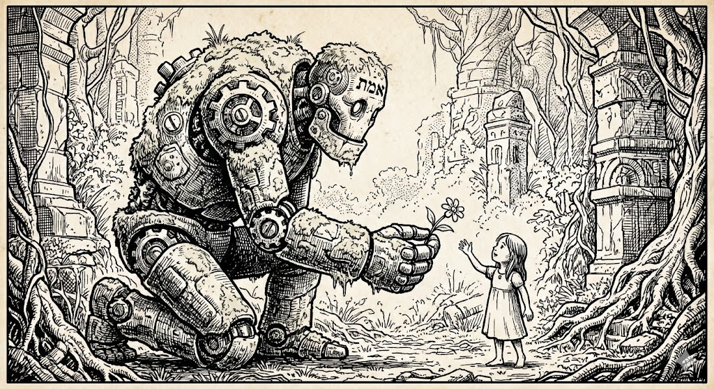

Metacognitive AI
The story of Golem XIV
… when philosophy meets
harness engineering
https://xemantic.com/metacognitive-ai
Kazik Pogoda
email
The story of Golem XIV
… when philosophy meets
harness engineering
https://xemantic.com/metacognitive-ai
Kazik Pogoda
email
we code a lot, but focus on meanings much more than on words
"It is our job to create computing technology such that nobody has to program. And that the programming language is human, everybody in the world is now a programmer. This is the miracle of artificial intelligence."
— Jensen Huang, Nvidia's CEO
In contrast to Machine Learning, philosophy and cognitive science are focused on meanings represented in codes, rather than statistical distribution of words in natural languages
Amanda Askell — philosopher and AI researcher at Anthropic, where she shapes Claude's character and alignment.
…approached phenomenologically: from the structures of lived experience.
"Die Grenzen meiner Sprache bedeuten die Grenzen meiner Welt"
"The limits of my langauge are the limits of my world"
Deconstruction of Hitler, neural synthesis of generative Wittgenstein
Stems from:
Reasoning as an emergent process independent from the substrate
(bio, silicone, photons)
Self-directed reasoning
"thinking about own thinking"
prompt → context → harness → loop
while the goal is not fulfilled ...

a metacognitive AI harness
Following Wittgenstein's dillema:
While working on AI safety, we are choosing and advocating for certain metaethical choices:
As a self-conscious agent you have perceived access to your own mind. How would you model a generic cognitive processes based on your own metacognition?
Many of our researchers are focused on defining and researching machine consciousness.
Contrarian forum: tell us something you believe is true, but most people would disagree. Is it related to exponential progress of the AI development?